Survey summary
Author: Klaudia Olejniczak
Presentation plan:
- General information about respondents
- Internet use
- Internet anxiety and Internet identifications
- Internet security
- Conclusions
- Q&A
General information about respondents
100 respondends
91 Poles
8 Ukrainians
1 German
How often do people use Internet?
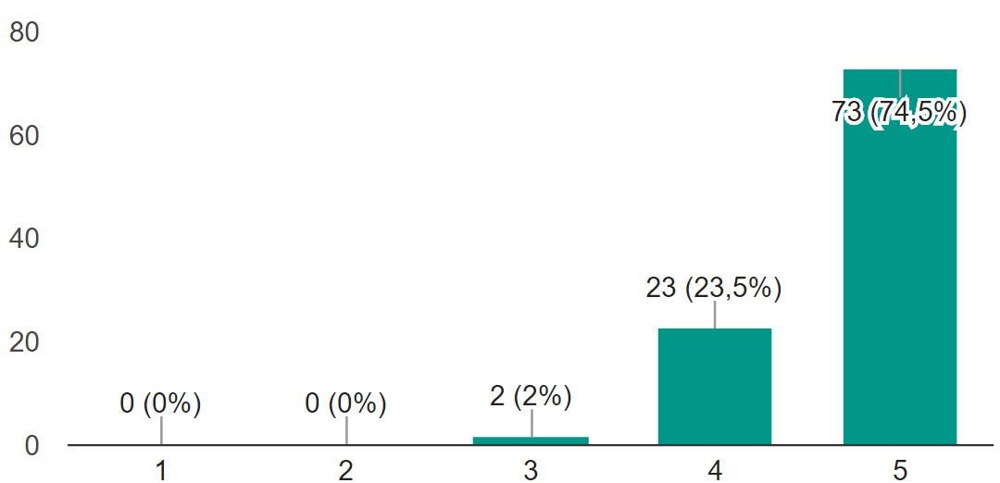
When do people use Internet?
ANSWER: Almost all the time
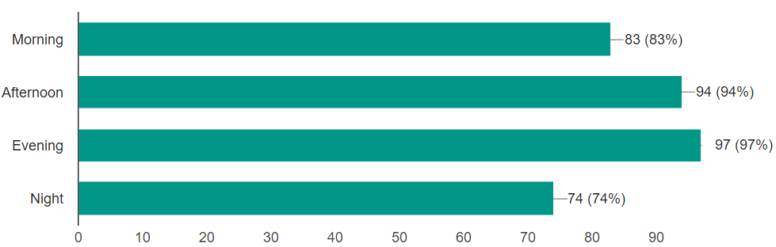
The most popular activities in the Internet
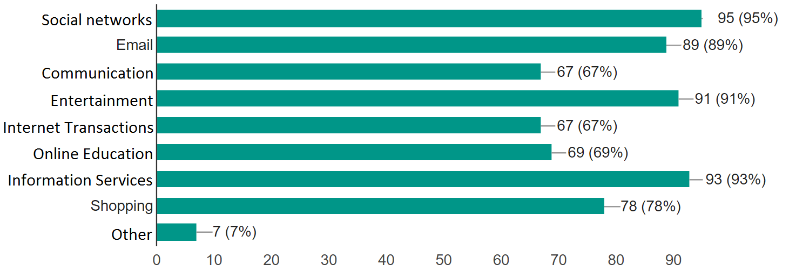
First generation of digital Natives
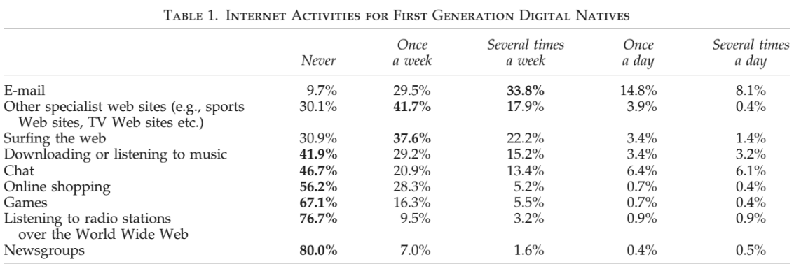
Second generation of digital Natives
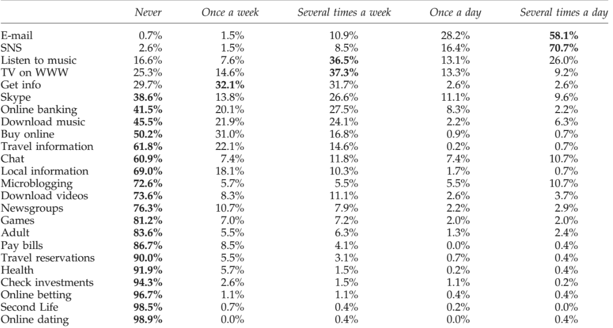
Internet Anxiety and Internet ID
Anxiety versus Social Networks
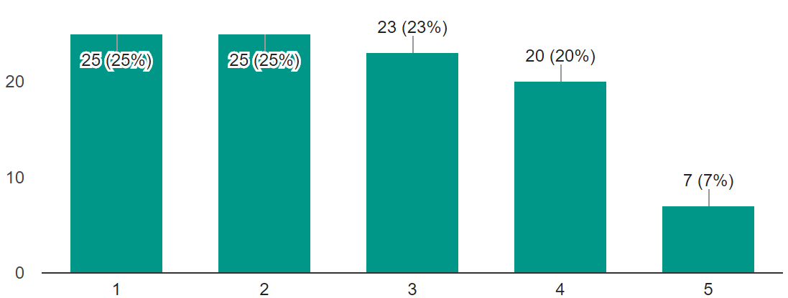
How anxious do people feel about posting with their real name
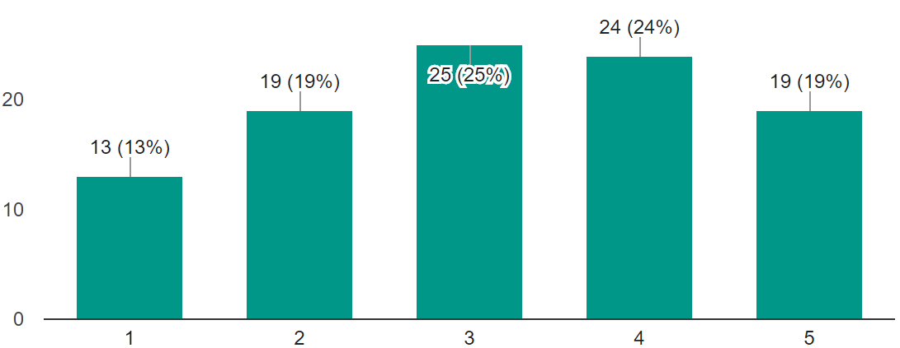
How anxious do people feel about posting something controversial under their real name
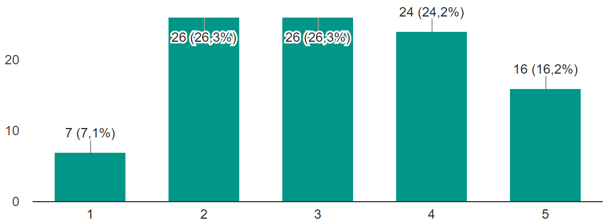
Using real names in the Internet
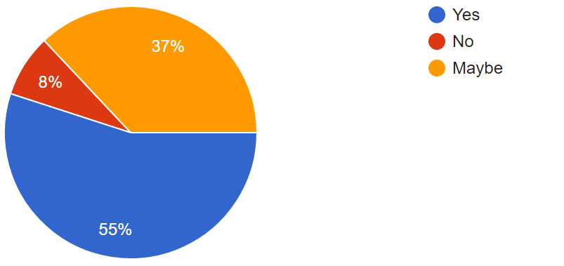
Using real pictures in the Internet
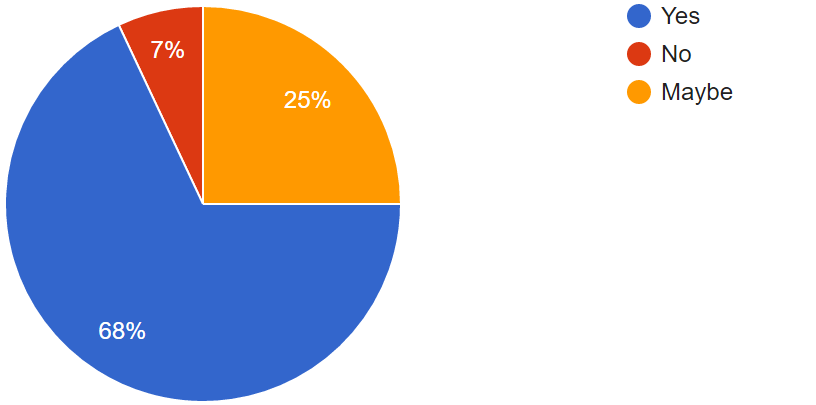
Do people feel safe in the Internet?
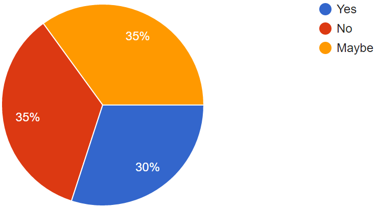
Do people feel that they have enough knowleadge about the Internet to make this decisions
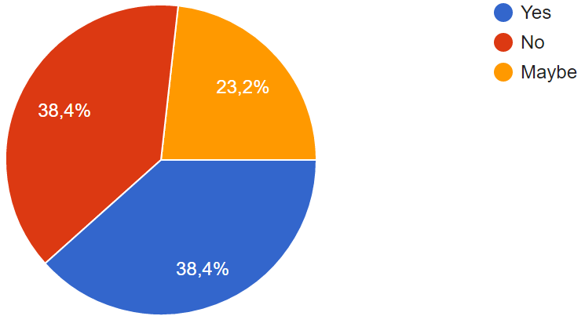
1. People(Mostly students) ale always connected to the Internet
2. People are quite anxious about posting, but they do it anyway.
3. People are confused about their knowledge of the Internet Security
1. Do you see any aspect of the topic that was not researched enough?
2. Do you think that the scale was understandable? Do you have suggestions how to improve it?
3. Do you think that some of the questions could be misunderstood?
References:
- Joiner, R., Gavin, J., Brosnan, M., Cromby, J., Gregory,
H., Guiller, J., Maras, P. and Moon, A. (2013). Comparing First and Second Generation Digital Natives’ Internet Use, Internet Anxiety, and Internet Identification. Cyberpsychology, Behavior, and Social Networking, 16 (7).
Retrieved from: https://www.ncbi.nlm.nih.gov/pubmed/23675995
- Olejniczak, K., Kuzhel, O., Kubicki, D. (Interviewers) and Citizens of Krakow (Interviewee). (2016). Survey [Survey transcript].
Retrieved from google survey site: https://docs.google.com/forms/d/1xlVDImukfItNIvdoJssWLDzTXl72TlEuQVZfVS-5FLU